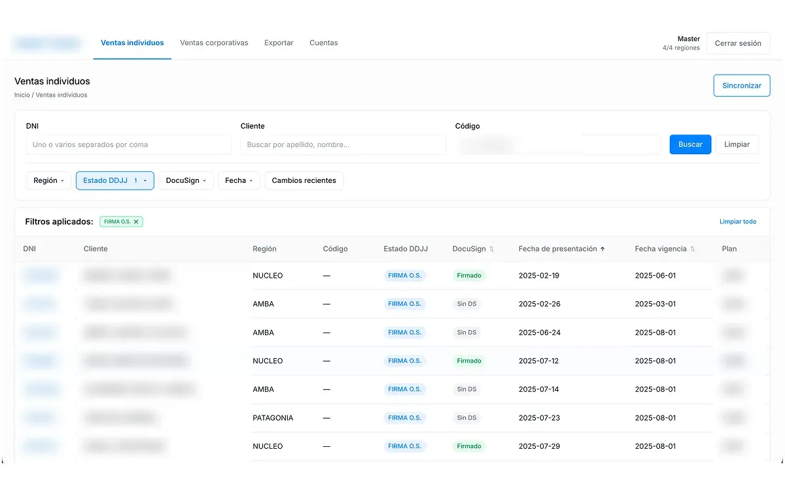

Datos anonimizados

Salud · Operaciones · Confidencial
Un tracker que avisa cuando un caso cambia de estado
Para saber si una póliza había cambiado de estado, el equipo tenía que entrar al sistema y revisar caso por caso. Construí un tracker conectado a la API que detecta esas actualizaciones solo: hoy saben en minutos qué casos necesitan atención, sin perder la tarde buscándolos uno por uno.
- App de escritorio
- Electron
- API
- Integraciones